Publications
My Google Scholar profile is available here.
Full Papers
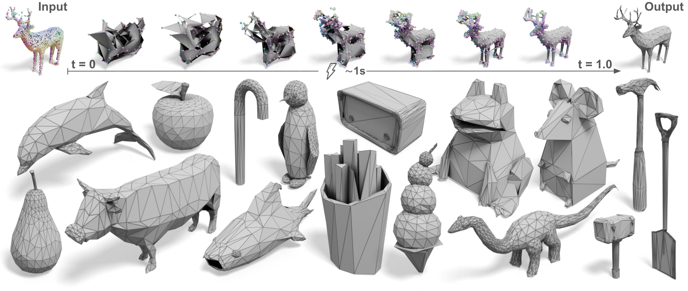
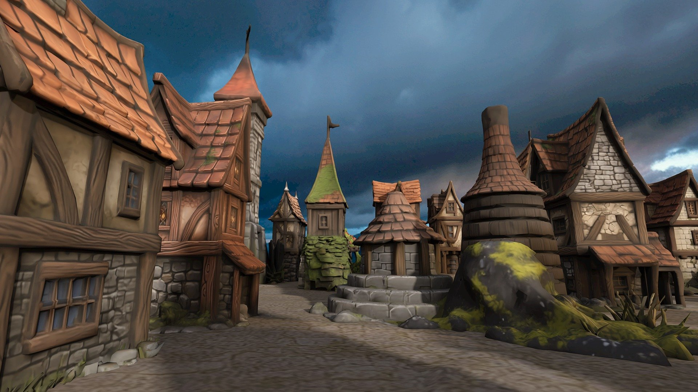
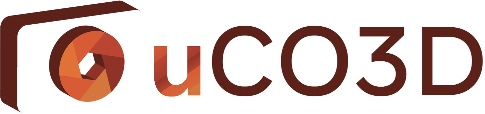
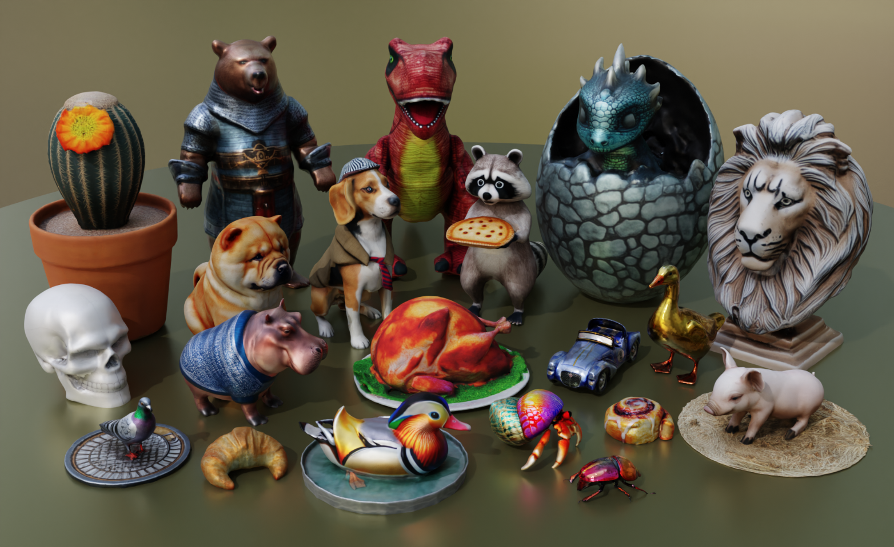
arXiv, 2024
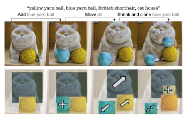
CVPR 2024, Seattle, USA
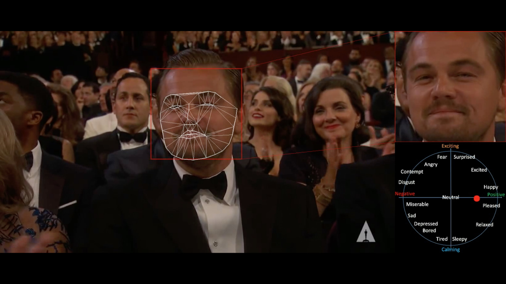
Nature Machine Intelligence, 2021
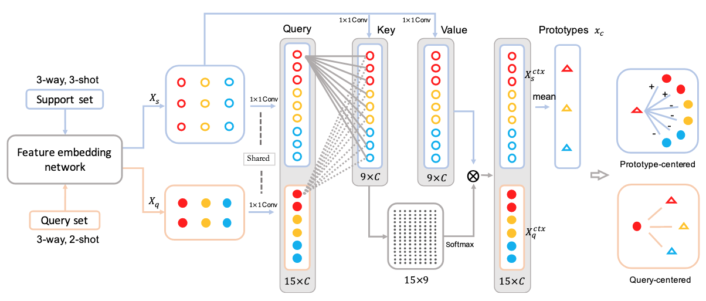
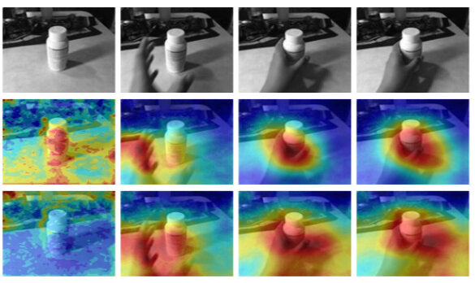
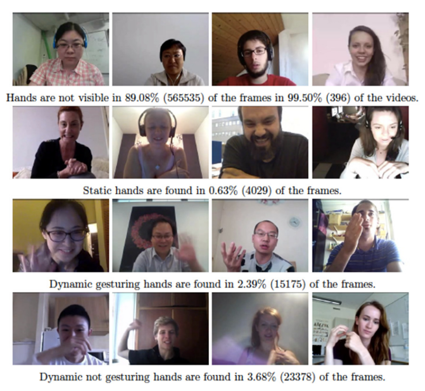
IEEE Transactions on Pattern Analysis and Machine Intelligence (TPAMI), 2021
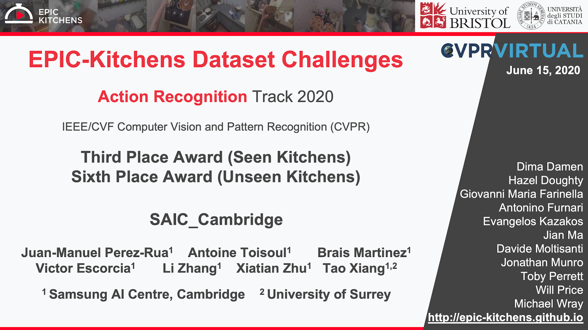
CVPR Workshops 2020, Seattle, USA — 3rd position at the Epic-Kitchens Challenge of CVPR 2020
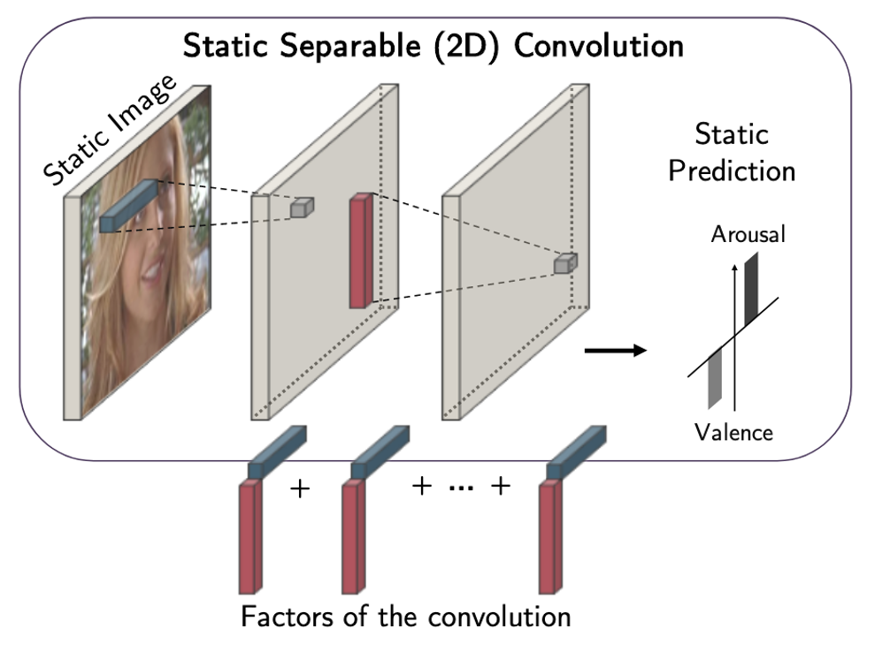
CVPR 2020, Seattle, USA
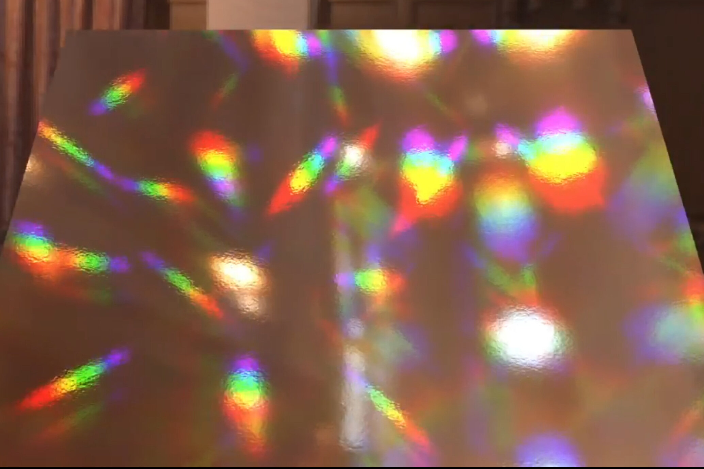
PhD thesis, Imperial College London, 2019
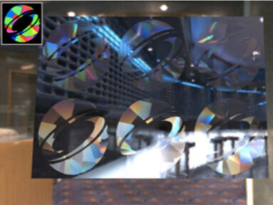
ACM Transactions on Graphics (Proc. SIGGRAPH Asia), 37(6), 2018, Tokyo, Japan
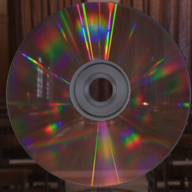
Proc. of European Conference on Visual Media Production (CVMP), Dec. 2017, London, UK
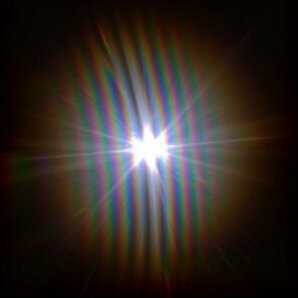
ACM Transactions on Graphics, 2017 (presented at SIGGRAPH 2017), Los Angeles, USA
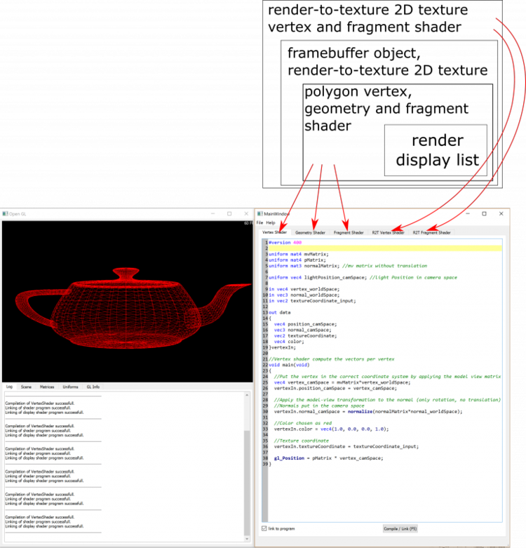
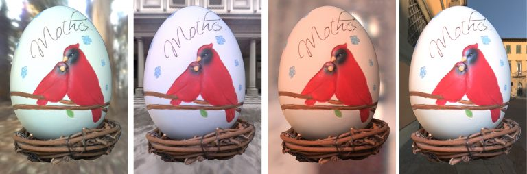
Proc. of European Conference on Visual Media Production (CVMP), Dec. 2016, London, UK
Presentations
- Invited talk at Sony, Japan on Acquiring Spatially Varying Appearance of Printed Holographic Surfaces. December 2018.
- Invited at the Google Computer Vision Summit in Zurich, Switzerland. September 2018.
- Acquiring Spatially Varying Appearance of Printed Holographic Surfaces at SIGGRAPH Asia 2018 in Tokyo, Japan.
- Real-time rendering of realistic surface diffraction with low rank factorisation at CVMP 2017 in London, UK.
- Practical Acquisition and Rendering of Diffraction Effects in Surface Reflectance at SIGGRAPH 2017 in Los Angeles, California.
- Accessible GLSL Shader Programming at Eurographics 2017 in Lyon, France.
- Image-Based Relighting using Room Lighting Basis at CVMP 2016 in London, UK.
Posters
- Practical acquisition and rendering of commonly found spatially varying holographic surfaces. Antoine Toisoul, Daljit Singh Dhillon, Abhijeet Ghosh. SIGGRAPH 2018 Poster.
- Real-time rendering of realistic surface diffraction with low rank factorisation. Antoine Toisoul, Abhijeet Ghosh. SIGGRAPH 2017 Poster.
- Image-Based Relighting using Room Lighting Basis. Antoine Toisoul, Abhijeet Ghosh. SIGGRAPH 2015 Poster.
- Image-Based Relighting using Room Lighting Basis. Antoine Toisoul, Abhijeet Ghosh. CVMP 2014 Poster.
Peer review
Reviewer for:
- CVPR (2026, 2025, 2024, 2023, 2022)
- SIGGRAPH (2021, 2020)
- SIGGRAPH Asia 2020
- ECCV 2022
- ICCV 2021
- Proceedings of the National Academy Of Sciences of the United States of America (PNAS)
- IEEE Transactions on Pattern Analysis and Machine Intelligence (TPAMI)
- Image And Vision Computing journal.